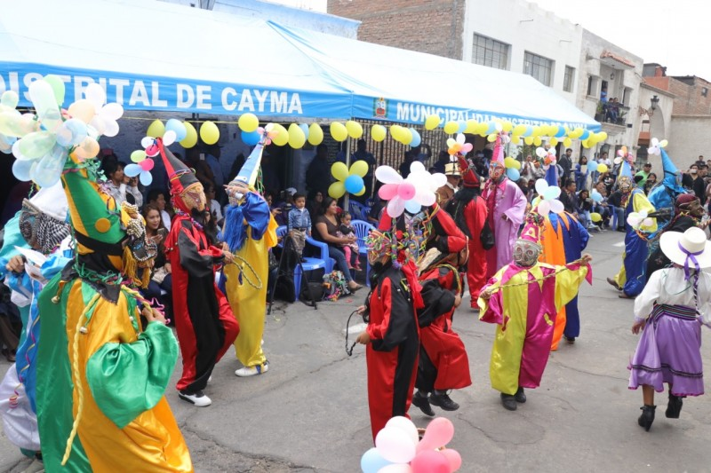
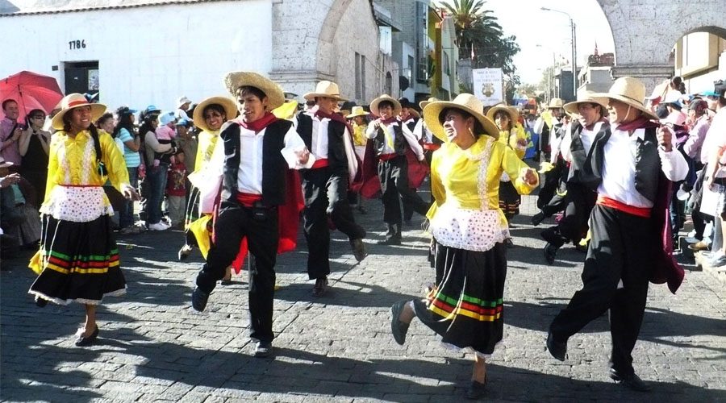
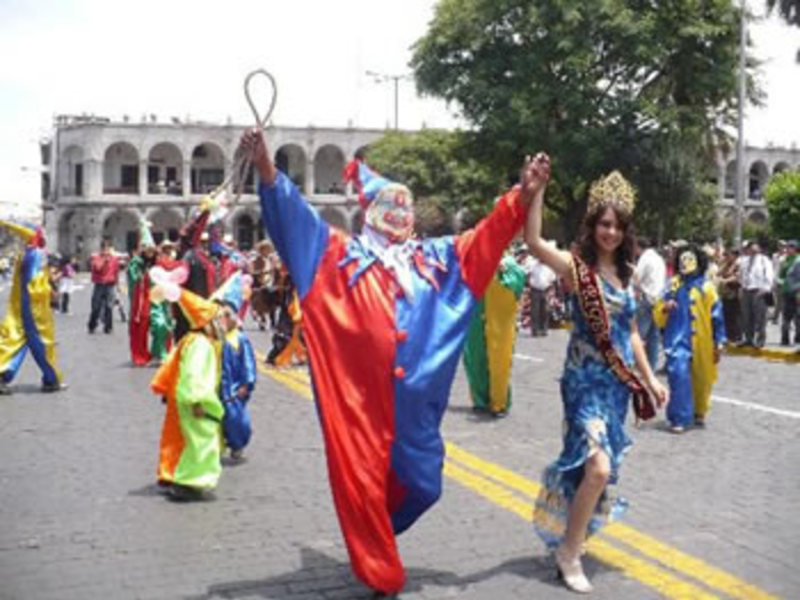

El Carnaval de Arequipa es un baile tradicional que se interpreta en los pasacalles de la celebración del mismo nombre. Al igual que el Wititi, es una danza de cortejo que principalmente es realizada por jóvenes. A través de sus pasos, entre rondas y filas, se despliega alegría y energía.
Es importante porque ellas son parte del recurso para enfrentarse entre barrios con la meta de ser el barrio que muestre la mayor algarabía en la celebración. Esta danza es un ritual en el que simboliza la lucha por vencer la resistencia amorosa del sexo opuesto. Las danzas del carnaval.
La celebración del carnaval es una fecha movible, aunque por lo general se puede seguir según la programación del calendario en las últimas semanas previas al miércoles de ceniza, más en específico entre fines de Febrero y comienzo de Marzo, teniendo como día principal el primer día, generalmente un domingo llamado «Domingo de Carnaval.
